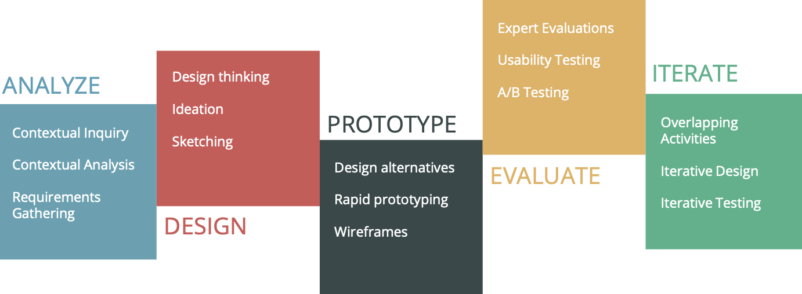
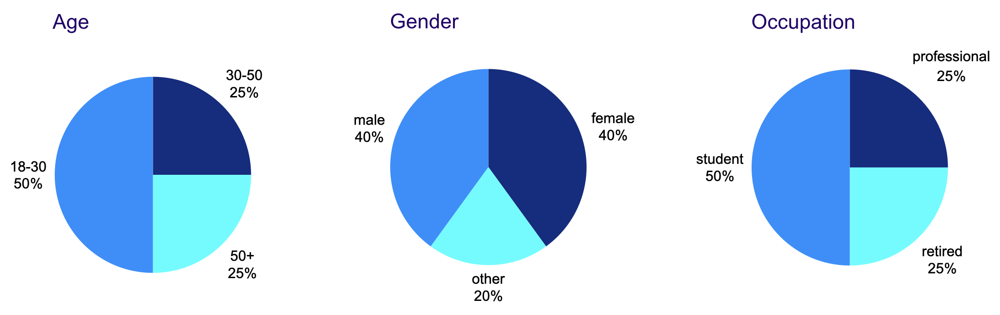
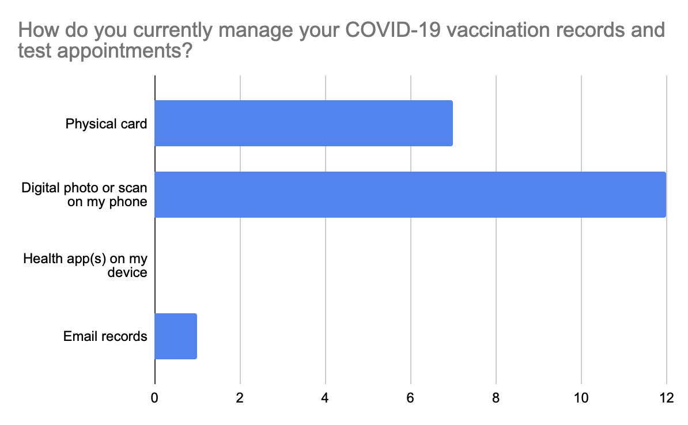
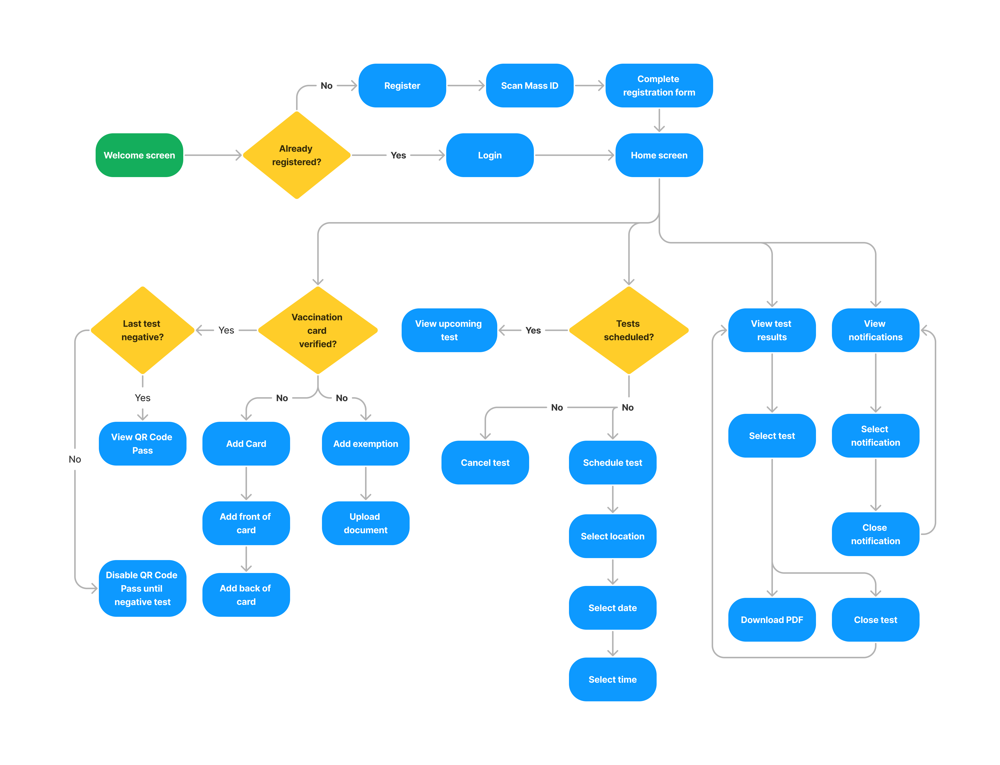
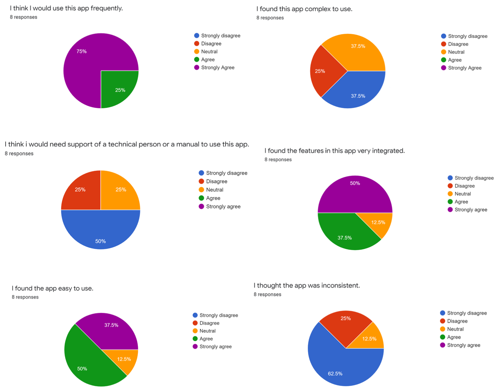
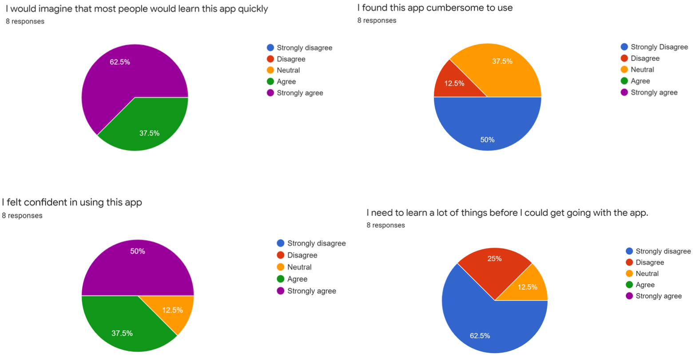
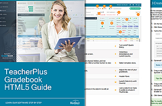

The Problem
The Covid-19 pandemic introduced unprecedented challenges, necessitating swift
adaptations
in public health management. Vaccination cards became a requirement in many places, and
frequent testing became part of people's daily lives. However, people often had problems
keeping track of their vaccination and testing records, such as because of loss or
damage as well as disconnected proprietary systems for scheduling tests.
The Solution
Build a statewide app that could serve as a digital vaccination pass and a unified
test scheduling system. This would be achieved by storing and verifying a person's
vaccination records and providing users with a centralized platform to schedule tests
and
view results.
Final High Fidelity Prototype Sample
Design Process
Our approach was grounded in a user-centered design process consisting of user research,
ideation and design, prototyping, testing, and iterative evaluation. Iterating on this
approach
ensured
that our design decisions were informed by users' needs and feedback at every stage. The
process comprised the following five main phases:

Quantitative and Qualitative Research
We interviewed 20 Boston residents, combining multiple-choice and open-ended questions to
identify common patterns and also deeply understand how Massachusetts residents manage
their
COVID-19 vaccination and testing information. This approach enabled us to gather both
quantitative data on usage patterns and qualitative insights into user needs and
frustrations, shaping the foundational design principles of our statewide vaccination
information and scheduling app.
Research Highlights


Memorable quotes from users:
“Finding a testing site within my area using the state's current system is
confusing; the information is scattered across different websites. A centralized
app where I could easily locate nearby testing sites and book an appointment
would save so much time.” –John C.
“I needed my vaccination record to enter a venue last week, and it took me
forever to find the photo I had taken from it, so they sent me back to the back
of the line. It was super stressful.” –Tessa G.
“Having a digital vaccination card would be so much easier. I wouldn't have to
worry about losing it or damaging it.” –Alex J.
Key Insights and Pain Points
- Users often lose or damage their vaccination cards, leading to frustration and
difficulty in accessing their vaccination records.
- Users want a centralized, digital source of vaccination information that is easily
accessible and shareable. They currently have to go through many resources to find
this.
-
Users want to view their vaccination status and test results quickly without having
to
go through many steps.
Contextual Analysis
With the data obtained from the research phase, we identified user's needs, wants, and
pain points as well as defined the personas and tasks.
Personas
Name: Alex Johnson
Age: 35
Occupation: Product Manager
Location: Boston, MA
Tech-Savviness: High
Goals:
- Quickly access vaccination records for business travel.
- Schedule COVID-19 tests around a tight work schedule.
Frustrations:
- Complex navigation in apps.
- Time-consuming scheduling processes.
Alex is a product manager for a tech company in Boston. With a
busy schedule, Alex values efficiency and often travels for work, requiring
easy access to vaccination and testing information.
Name: Maria Gonzalez
Age: 68
Occupation: Retired Teacher
Location: Worcester, MA
Tech-Savviness: Moderate
Goals:
- Keep vaccination information in one place.
- Understand how to navigate the app with ease.
Frustrations:
- Small text and buttons difficult to interact with.
- Confusing app interfaces.
Maria is a retired teacher who enjoys spending time with her grandchildren. She
has a smartphone but sometimes finds new apps challenging to navigate. Maria
wants to be able to show her vaccination and test records without having to take
too many extra steps
Name: Jordan Taylor
Age: 20
Occupation: College Student
Location: Amherst, MA
Tech-Savviness: High
Goals:
- Integrate health scheduling with academic and social life.
- Share vaccination status easily for campus activities.
Frustrations:
- Apps that don't integrate well with other tools (e.g., calendar apps).
- Outdated information or slow updates.
Jordan is a college student majoring in environmental science. They are active in
campus life and participate in several extracurricular activities. Jordan looks
for digital solutions that can seamlessly fit into a busy and mobile lifestyle.
Affinity Diagram
Design and Ideation
Task Flows

Paper Sketches
Having defined the flow, we sketched possible wire frames and voted with our initials on
the sketches we
thought fit the user experience best.
Small Sample of the Low Fidelity Wire Frames and Prototype from Figma
Testing and Iteration
We conducted usability testing using the low fidelity interactive prototypes various
users who fit the personas we had outlined. We evaluated different aspects of
the app to ensure it met user needs and expectations, including:
-
Navigation: Can users easily find what they are looking for?
-
Learnability: Can users learn how to use the app quickly?
-
Task completion: Can users complete tasks without errors? Which errors come up?
-
Consistency: Is the app consistent in its design and user experience?
-
Content: Is the content clear and easy to understand?
-
Accessibility: Can users with disabilities use the app?
-
Satisfaction: Are users satisfied with the app?
We iterated on this process several times, making changes to the design based on user
feedback.
Post-Test Survey Results


Some of the insights we obtained through testing included:
-
Users wanted a dedicated screen to view their covid pass, which was not large enough
on the home screen widget.
-
A confirmation screen was needed after users attempted to cancel a test.
-
Users wanted a notifications screen to know when their test results were ready.
High Fidelity Prototype
Based on the feedback we received, we iterated on the design, making changes to the
user
interface and user experience to better meet the needs of our users. We then created
a
high fidelity prototype for further testing.
Small Sample of the High Fidelity Prototype Designed in Figma

End User Guide
MadCap Flare
I designed and authored this user guide to help teachers get started using the company's web
gradebook application. It
features step-by-step instructions on the tasks most important to its end users, important
notes and tips, and a minimalist design.
Technologies
- Documentation as code: documentation was treated as code with source control and
structured content authoring in XML, HTML, CSS, and JavaScript.
- MadCap Flare for Content Management and multi-channel publishing
- HTML, CSS, JavaScript, and jQuery for dynamic content of the online user guide.
- User feedback: To better improve content quality, users could also
send feedback on the web version of the guide.
Writing this guide posed an interesting publishing challenge: A newly redesigned version of
the application was released, and documentation needed to be maintained for both the former
and newer version. A lot of content overlapped with key differences in the UI and in some
functionality. I maximized content reuse so that I could maintain different versions of the
guide without ever having to duplicate information.
This project uses multi-publishing and single-sourcing techniques to reuse content for
different versions of the application as well as a web and PDF version of the guide.
View PDF version
View online version